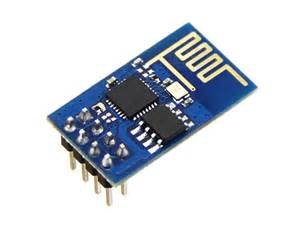

This temperature sensor is based on the ESP8266 module
It comes complete with a power supply, everything that you need already soldered together.
Installation instructions:
Connect to pc
Flash the unit
To purchase this item:
Transfer $18 via paypal to paulware@hotmail.com.
Send an email to paulware@hotmail.com with subject: Temperature Sensor, and body containing your US postal address
I will then ship the item to your postal address and send back a confirmation email
No shipments out of country are currently supported.